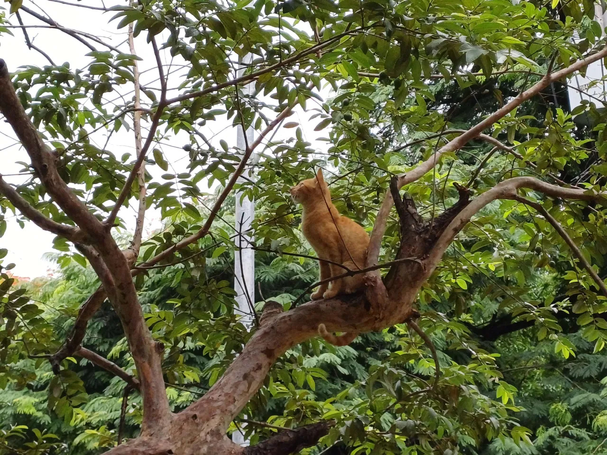
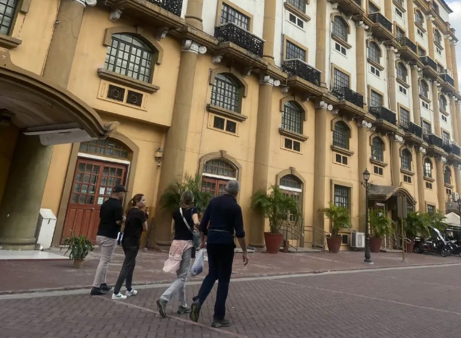
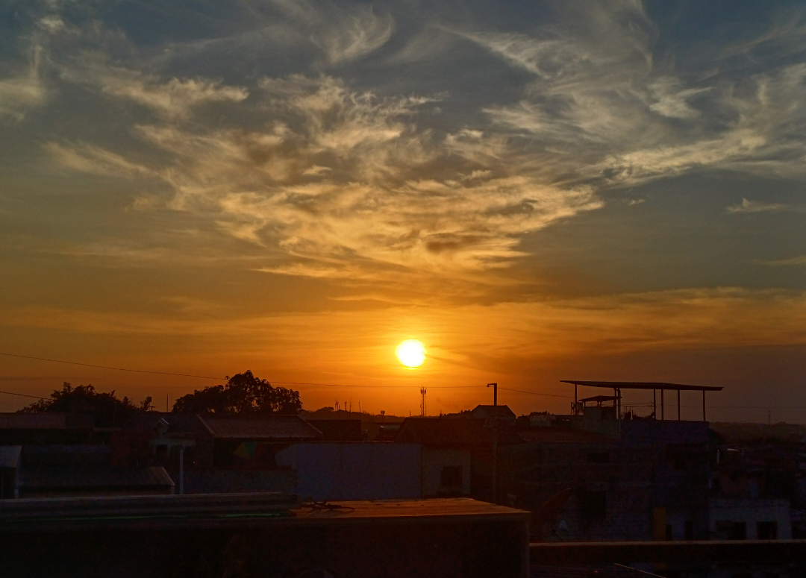
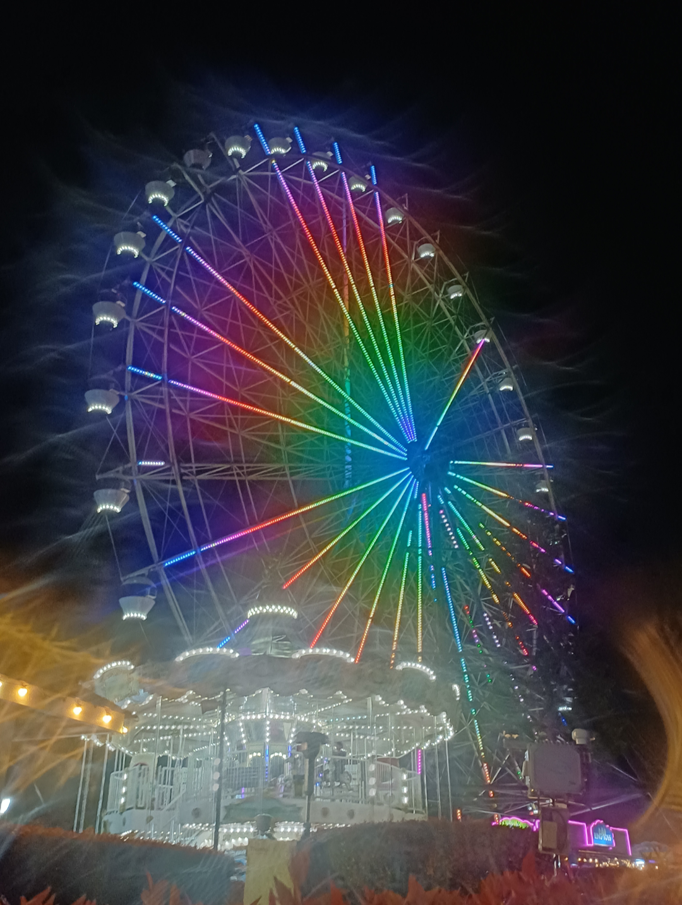

Gallery

A quiet moment captured during a rest through the neighborhood. Perched high among the dense green foliage, this adventurous ginger cat was casually watching the world go by from its comfortable spot on a thick branch.
Walking past the grand, classic façade of an iconic historic building. The warm afternoon light highlights the intricate balconies and tall arches while people wander along the paved street, taking in the charm and history of the city.


Watching the day come to a close over the city skyline. The glowing sun drops low against wispy, feathered clouds, casting a vibrant warm light across the rooftops and bringing a calm, peaceful end to the afternoon.
An evening full of lights and energy at the fairgrounds. The Ferris wheel stood out against the dark sky with its bright, spectrum-colored lights radiating outward, making the whole night feel vibrant and alive.


Caught up in the energy of a live gig. Bathed in purple stage lights and bright spotlights, the band put on an incredible set, filling the venue with good music and an unforgettable atmosphere.
A reflective moment standing in front of the monument. Capturing the monument and surrounding gardens in classic black and white gave the visit a timeless, grounded feel.